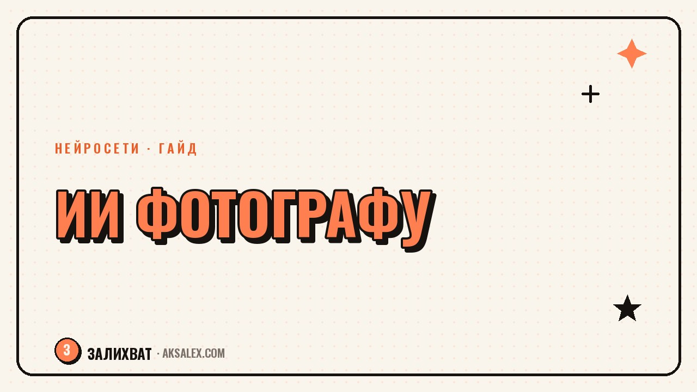

Нейросети для фотографа: обработка и генерация

Фотограф раньше тратил на обработку одной съёмки вечер, а то и два: убрать пыль с матрицы, вытянуть тени, подрезать фон, свести цвет по кадрам. Нейросети не заменяют глаз и вкус, но снимают рутину - шумодав, ретушь кожи, замену фона, генерацию вариантов для клиента. Разберём, какие инструменты реально работают на фотографа, а не только красиво выглядят в рекламе.
Обработка: то, что раньше делали руками в Photoshop
Первая категория - инструменты, которые ускоряют работу с уже отснятым кадром. Сюда входят шумоподавление, повышение резкости, увеличение разрешения и удаление лишних объектов. Это не творческая часть, а техническая, поэтому именно здесь нейросеть экономит больше всего времени.
Adobe добавила ИИ прямо в Lightroom и Photoshop: Denoise убирает цифровой шум с ночных и репортажных кадров без потери деталей, а Generative Fill дорисовывает или убирает объекты по выделению - провода, случайных прохожих, часть фона. Отдельный игрок в этой нише - Topaz Photo AI, специализированный инструмент для шумодава, резкости и апскейла, который многие ставят рядом с Lightroom как второй проход перед сдачей проекта.
Когда это оправдано
- Съёмка при слабом свете - концерты, мероприятия, интерьеры без вспышки
- Клиент просит убрать провода, розетки, посторонних людей с кадра
- Нужно увеличить старое фото для печати без потери качества
- Большая серия снимков с одинаковой технической проблемой - удобнее прогнать пакетно
Генерация: фон, замена неба, продуктовая съёмка без студии
Вторая категория - генеративные модели, которые создают изображение с нуля или существенно его переписывают. Для фотографа это чаще всего замена фона в предметной съёмке, генерация вариантов неба на пейзаже или создание концепт-картинок для клиента перед реальной съёмкой.
Для предметной и продуктовой фотографии удобны сервисы вроде Photoroom - убрать фон товара и подставить студийный или сюжетный вместо него за минуту, без света и реквизита. Для более творческой генерации - Midjourney и Stable Diffusion, ими пользуются, чтобы быстро показать клиенту настроение будущей съёмки: свет, цвет, композицию, - до того как бронировать площадку и модель.
Где граница честности
Здесь важно разделять жанры. В репортажной, свадебной и документальной съёмке добавление или удаление реальных объектов - вопрос профессиональной этики, и многие фотографы принципиально ограничивают себя только техническими правками. В рекламной и предметной съёмке генерация фона - обычная практика, ей давно пользуются и без нейросетей, только раньше это делали руками в Photoshop дольше.
Ретушь портрета: где нейросеть помогает, а где портит
Автоматическая ретушь кожи, выравнивание тона лица, лёгкая коррекция фигуры - там, где нейросеть закрывает 80% рутинной работы за секунды. Такие функции встроены в Luminar Neo и в плагины для Lightroom, они анализируют лицо и предлагают правки, которые раньше требовали набитой руки ретушёра.
Проблема начинается, когда автоматику не проверяют. Алгоритмы иногда сглаживают то, что не нужно трогать - текстуру волос, естественные морщины у пожилых людей, родинки, которые являются частью узнаваемой внешности. Итог - лица получаются пластиковыми и одинаковыми, клиент перестаёт узнавать себя на фото.
Нейросеть в ретуши - это черновик от ассистента, а не финальное решение. Финальное решение всегда за глазом фотографа, который видит конкретного человека, а не усреднённый идеал красоты из обучающей выборки.
- Проверяй ретушь на 100% масштабе, а не в превью
- Снижай силу эффекта - почти всегда автоматика перебарщивает по умолчанию
- Сохраняй индивидуальные черты: родинки, шрамы, форму носа
- Для возрастных портретов используй ручную маску, а не общий фильтр на всё лицо
Сравнение инструментов по задачам
Чтобы не тратить время на пробы, вот сводная таблица по типовым задачам фотографа - что для чего ставить и на что рассчитывать по деньгам.
| Инструмент | Задача | Формат доступа |
|---|---|---|
| Lightroom (Denoise, Generative Remove) | Шумодав, удаление объектов | Платная подписка Adobe |
| Topaz Photo AI | Шумодав, резкость, апскейл | Платная лицензия, разовая покупка |
| Photoroom | Удаление и замена фона товара | Есть бесплатный тариф с ограничениями |
| Luminar Neo | Ретушь портрета, небо, композиция | Платная подписка или лицензия |
| Midjourney / Stable Diffusion | Генерация концептов и настроения | Платная подписка, у Stable Diffusion есть открытые модели |
Как встроить нейросети в рабочий процесс, а не хаотично тыкать кнопки
Самая частая ошибка - открывать десять сервисов подряд без системы. Работает обратный подход: сначала определи, на каком этапе обработки теряется больше всего времени именно у тебя, и закрывай эту конкретную дыру одним инструментом, а не всем набором сразу.
Порядок внедрения по шагам
- Шаг 1. Посчитай, сколько минут уходит на разбор одной съёмки по этапам: отбор, цвет, ретушь, экспорт
- Шаг 2. Найди самый долгий этап - обычно это ретушь портретов или чистка технических дефектов
- Шаг 3. Подключи один инструмент под этот этап и протестируй на реальном проекте, а не на тестовых кадрах
- Шаг 4. Сравни время до и после на одинаковом объёме кадров
- Шаг 5. Только после этого добавляй следующий инструмент под следующий по длительности этап
Такой пошаговый подход экономит не только время на освоение, но и деньги: подписки на все сервисы разом стоят заметно дороже, чем один-два инструмента, которые реально закрывают твои узкие места.
Права, атрибуция и что говорить клиенту
Когда в кадре появляется сгенерированный или существенно изменённый нейросетью фон, разумно предупреждать об этом клиента заранее, особенно если речь о портфолио или конкурсной работе. Это не только вопрос этики, но и практики: некоторые фотоконкурсы и стоки прямо требуют указывать степень ИИ-обработки в кадре.
Для коммерческой съёмки - рекламы, каталогов, соцсетей бренда - такого требования обычно нет, и генеративная замена фона воспринимается как обычный инструмент постпродакшна. Правило такое: чем ближе кадр к документальному жанру, тем осторожнее стоит быть с генерацией.
Частые вопросы
Заменит ли нейросеть фотографа полностью?
Нет, потому что композицию, свет и момент съёмки нейросеть не создаёт - это работа фотографа на площадке. Она берёт на себя постобработку и рутину, освобождая время на съёмку и общение с клиентом.
Какая нейросеть лучше всего убирает шум с ночных фото?
Хорошо себя показывают Denoise в Lightroom и отдельный Topaz Photo AI - оба анализируют кадр и убирают цифровой шум, сохраняя детали. Выбор часто зависит от того, в каком редакторе ты уже работаешь.
Можно ли пользоваться Midjourney для коммерческой съёмки?
Для генерации референсов и концептов перед съёмкой - да, это ускоряет согласование с клиентом. Использовать сгенерированное изображение как финальный кадр вместо реальной фотографии стоит только с прямого согласия клиента.
Стоит ли автоматически ретушировать все портреты одинаковым фильтром?
Нет, одинаковый фильтр на разные лица даёт эффект пластика и стирает индивидуальность. Автоматику лучше использовать как первый черновой проход, а финальную правку делать вручную под конкретного человека.
С чего начать, если бюджет на нейросети ограничен?
Начни с одного инструмента под самый долгий этап обработки - обычно это шумодав или удаление лишних объектов. Многие сервисы вроде Photoroom дают бесплатный тариф, которого достаточно, чтобы оценить пользу до платной подписки.
Раз тема оказалась полезной, вот что почитать следующим. Разбираем, какие этапы написания текста нейросеть реально ускоряет, а какие портит без контроля автора.
Читать статью →а не вручную